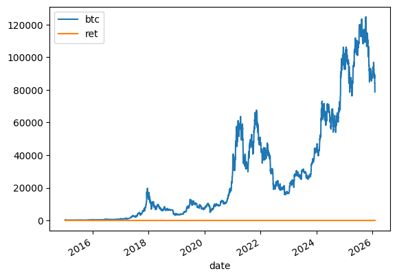
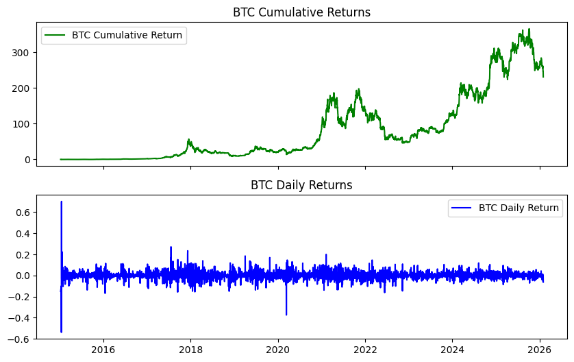
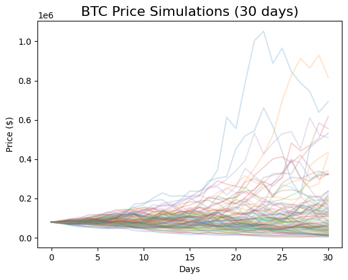

FRED API and pandas-datareader#
This section covers two powerful tools for accessing economic and financial data:
FRED API via the
fredapipackagepandas-datareader for accessing multiple data sources
What is FRED?#
The Federal Reserve Economic Data (FRED) is maintained by the Federal Reserve Bank of St. Louis. It contains over 800,000 economic time series from dozens of sources, including:
GDP and economic growth indicators
Inflation measures (CPI, PCE)
Interest rates and yield curves
Employment and labor market data
International economic data
Cryptocurrency prices
Getting Started with FRED#
To use the FRED API, you need to:
Create a FRED account
Request an API key
Store your key securely (never hardcode it!)
Install the package:
pip install fredapi
Set-up#
# Core packages
from fredapi import Fred
import pandas_datareader as pdr
import os
from dotenv import load_dotenv
import numpy as np
import pandas as pd
import datetime as dt
import matplotlib as mpl
import matplotlib.pyplot as plt
# Include this to have plots show up in your Jupyter notebook.
%matplotlib inline
# Load API keys from .env file
load_dotenv()
# Retrieve API keys
FRED_API_KEY = os.getenv('FRED_API_KEY')
# Initialize FRED API
fred = Fred(api_key=FRED_API_KEY)
Secure API Key Storage#
Here’s the wrong way to use your API key:
# DON'T DO THIS!
fred = Fred(api_key='your_api_key_here')
If you push this code to GitHub, your key is exposed to the world!
Using GitHub Secrets (Recommended for Codespaces)#
If you’re using GitHub Codespaces:
Go to your main GitHub page at GitHub.com
Click your profile image (upper-right) → Settings
Click Codespaces under “Code, planning, and automation”
Click New Secret under “Codespaces Secrets”
Name it (e.g.,
FRED) and paste your API keySelect the repo(s) to associate with this secret

Fig. 36 GitHub Codespaces secrets settings.#

Fig. 37 Adding a new secret.#
Then access it in your code:
# Secure way (Recommended)
from fredapi import Fred
import os
FRED_API_KEY = os.environ.get('FRED')
fred = Fred(api_key=FRED_API_KEY)
Note
If you add a secret while your Codespace is running, you’ll need to restart it for the secret to be available.
FRED Example: Bitcoin Data#
Let’s pull Bitcoin price data from FRED. You can find the series here.
When you find data on FRED, note the series code - that’s how you’ll request it via the API.
btc = fred.get_series('CBBTCUSD')
btc.tail()
2026-01-27 89296.00
2026-01-28 88963.96
2026-01-29 83943.96
2026-01-30 83986.02
2026-01-31 78727.30
dtype: float64
That’s just a plain Series, not a DataFrame. Let’s convert it and clean it up.
btc = btc.to_frame(name='btc')
btc = btc.rename_axis('date')
btc
| btc | |
|---|---|
| date | |
| 2014-12-01 | 370.00 |
| 2014-12-02 | 378.00 |
| 2014-12-03 | 378.00 |
| 2014-12-04 | 377.10 |
| 2014-12-05 | NaN |
| ... | ... |
| 2026-01-27 | 89296.00 |
| 2026-01-28 | 88963.96 |
| 2026-01-29 | 83943.96 |
| 2026-01-30 | 83986.02 |
| 2026-01-31 | 78727.30 |
4080 rows × 1 columns
# Drop missing values
btc = btc.dropna()
# Calculate returns
btc['ret'] = btc['btc'].pct_change()
/var/folders/kx/y8vj3n6n5kq_d74vj24jsnh40000gn/T/ipykernel_22340/1503532820.py:2: SettingWithCopyWarning:
A value is trying to be set on a copy of a slice from a DataFrame.
Try using .loc[row_indexer,col_indexer] = value instead
See the caveats in the documentation: https://pandas.pydata.org/pandas-docs/stable/user_guide/indexing.html#returning-a-view-versus-a-copy
btc['ret'] = btc['btc'].pct_change()
btc = btc.loc['2015-01-01':, ['btc', 'ret']]
btc.plot()
<Axes: xlabel='date'>

That’s not a very good graph - the returns and price levels are in different units. Let’s format the average return nicely:
print(f'Average return: {100 * btc.ret.mean():.2f}%')
Average return: 0.21%
Visualizing Cumulative Returns#
Let’s create a cumulative return chart and daily return chart, stacked on top of each other.
btc['ret_g'] = btc.ret.add(1) # gross return
btc['ret_c'] = btc.ret_g.cumprod().sub(1) # cumulative return
btc
| btc | ret | ret_g | ret_c | |
|---|---|---|---|---|
| date | ||||
| 2015-01-08 | 288.99 | -0.150029 | 0.849971 | -0.150029 |
| 2015-01-13 | 260.00 | -0.100315 | 0.899685 | -0.235294 |
| 2015-01-14 | 120.00 | -0.538462 | 0.461538 | -0.647059 |
| 2015-01-15 | 204.22 | 0.701833 | 1.701833 | -0.399353 |
| 2015-01-16 | 199.46 | -0.023308 | 0.976692 | -0.413353 |
| ... | ... | ... | ... | ... |
| 2026-01-27 | 89296.00 | 0.013156 | 1.013156 | 261.635294 |
| 2026-01-28 | 88963.96 | -0.003718 | 0.996282 | 260.658706 |
| 2026-01-29 | 83943.96 | -0.056427 | 0.943573 | 245.894000 |
| 2026-01-30 | 83986.02 | 0.000501 | 1.000501 | 246.017706 |
| 2026-01-31 | 78727.30 | -0.062614 | 0.937386 | 230.550882 |
4036 rows × 4 columns
fig, axs = plt.subplots(2, 1, sharex=True, sharey=False, figsize=(10, 6))
axs[0].plot(btc.ret_c, 'g', label='BTC Cumulative Return')
axs[1].plot(btc.ret, 'b', label='BTC Daily Return')
axs[0].set_title('BTC Cumulative Returns')
axs[1].set_title('BTC Daily Returns')
axs[0].legend()
axs[1].legend();

A Bitcoin Simulation #
Let’s put together some ideas, write a function, and run a simulation using Geometric Brownian Motion (GBM).
What is GBM?#
GBM is a stochastic differential equation commonly used to model asset prices:
This says the change in stock price has two components:
A drift (\(\mu\)): the average increase over time
A shock (\(\sigma dW_t\)): random noise scaled by volatility
The solution gives us the price at any time \(t\):
Note
We’re not predicting here. We’re capturing basic dynamics of how an asset moves and seeing what’s possible in the future.
# Simulation parameters
T = 30 # Time horizon (days)
N = 30 # Number of time steps
S_0 = btc.btc[-1] # Initial BTC price
N_SIM = 100 # Number of simulations
mu = btc.ret.mean()
sigma = btc.ret.std()
/var/folders/kx/y8vj3n6n5kq_d74vj24jsnh40000gn/T/ipykernel_22340/3399872927.py:4: FutureWarning: Series.__getitem__ treating keys as positions is deprecated. In a future version, integer keys will always be treated as labels (consistent with DataFrame behavior). To access a value by position, use `ser.iloc[pos]`
S_0 = btc.btc[-1] # Initial BTC price
def simulate_gbm(s_0, mu, sigma, n_sims, T, N):
"""Simulate asset prices using Geometric Brownian Motion."""
dt = T / N # One day
dW = np.random.normal(scale=np.sqrt(dt), size=(n_sims, N)) # Random shocks
W = np.cumsum(dW, axis=1) # Cumulative sum of shocks
time_step = np.linspace(dt, T, N)
time_steps = np.broadcast_to(time_step, (n_sims, N))
S_t = s_0 * np.exp((mu - 0.5 * sigma ** 2) * time_steps + sigma * np.sqrt(time_steps) * W)
S_t = np.insert(S_t, 0, s_0, axis=1)
return S_t
# Run the simulation
gbm_simulations = simulate_gbm(S_0, mu, sigma, N_SIM, T, N)
# Plot all simulations
gbm_simulations_df = pd.DataFrame(np.transpose(gbm_simulations))
ax = gbm_simulations_df.plot(alpha=0.2, legend=False)
ax.set_title('BTC Price Simulations (30 days)', fontsize=16)
ax.set_xlabel('Days')
ax.set_ylabel('Price ($)');

The y-axis has a wide range because some extreme values are possible given Bitcoin’s high volatility.
pandas-datareader#
The pandas-datareader package provides a unified interface to multiple data sources, including FRED.
Install it:
pip install pandas-datareader
Note
Different data sources might require API keys. Always read the documentation.
# Example: Pull GDP data from FRED using pandas-datareader
start = dt.datetime(2010, 1, 1)
end = dt.datetime(2023, 1, 27)
gdp = pdr.DataReader('GDP', 'fred', start, end)
gdp.head()
| GDP | |
|---|---|
| DATE | |
| 2010-01-01 | 14764.610 |
| 2010-04-01 | 14980.193 |
| 2010-07-01 | 15141.607 |
| 2010-10-01 | 15309.474 |
| 2011-01-01 | 15351.448 |
The advantage of pandas-datareader is the consistent interface across different data sources. Check the documentation for all available sources.